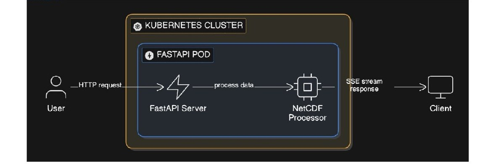
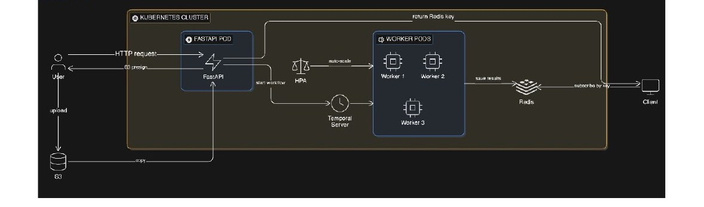

문제 상황
- 대용량 응답으로 클라이언트 다운 — NetCDF 시계열 데이터를 한 번에 전송하니 클라이언트가 응답을 처리하지 못하고 다운되는 현상 발생, 커넥션도 장시간 점유
- 중단 시 전체 재시작 — Worker Pod가 중간에 재시작되거나 배포되면, 이미 처리한 수천 개의 타임스텝도 처음부터 다시 처리해야 함
- 단일 Pod 병목 — FastAPI 하나가 수신·처리·응답을 모두 담당, 수평 확장 구조 부재로 요청 증가 시 응답 지연 폭증
- 대용량 업로드 시간 지연 — 클라이언트 → 서버 → NFS로 경유되며 서버가 전체 파일을 수신한 뒤 NFS에 저장해야 해서 업로드 완료까지 시간이 길어지고 서버 메모리·네트워크 비용도 이중으로 발생
해결 과정
- 응답 모델 재설계 — 한 번에 전부 전송하는 구조에서, 타임스텝별 결과물을 Redis에 저장하고 클라이언트가 시계열 단위로 Key를 통해 순차 조회하는 구조로 전환
- Temporal 비동기 처리 도입 — FastAPI는 Workflow 시작과 Key 반환만 담당, 실제 처리는 Worker가 수행 — 요청과 실행을 분리
- Heartbeat 기반 체크포인트 복구 — 처리 중인 타임스텝 인덱스를
activity.heartbeat로 주기 보고, 재시작 시heartbeat_details에서 마지막 인덱스를 꺼내 이어서 처리 - S3 Presigned URL 업로드 구조 — 클라이언트가 S3에 직접 업로드 후 서비스가 S3에서 copy해 NFS에 저장 — 업로드 시간 단축 + 서버 부하 절감
- HPA 수평 확장 — Worker Pod 수를 HPA로 오토스케일링, 부하에 따라 처리량 확보


역할
- 아키텍처 전환 설계 — SSE 직접 전송 방식의 한계(커넥션 점유, 중단 시 재처리)를 진단하고, Temporal + Redis 기반 비동기 구조로의 전환 결정 및 설계
- 프론트와 응답 스펙 합의 — Redis Key 반환 방식을 먼저 제안, 클라이언트 소비 방식·조회 패턴을 프론트 개발자와 협의 후 확정하고 구현 착수
- 체크포인트 복구 구현 — heartbeat 콜백 함수를 이미지 생성 루프에 주입, Activity 재시작 시 heartbeat_details에서 start_idx를 꺼내 이어서 처리하도록 구현
- S3 Presigned URL 발급 API 구현 — KakaoCloud Object Storage 연동, 서버에서 임시 URL을 발급해 클라이언트가 S3에 직접 업로드 → 서비스가 S3에서 copy해 NFS에 저장하는 구조 설계 및 엔드포인트 구현
- HPA 설정 및 튜닝 — Worker Pod의 HPA minReplicas/maxReplicas 설정, cold-start 지연을 고려한 최소 Replica 수 결정
- JMeter 부하 테스트 — 동시 50건 부하 시나리오 구성, 처리량·에러율 측정 및 HPA 튜닝 결과 검증
기술 선택 근거
- SSE 직접 스트리밍 대신 Redis Key 반환을 택한 이유
- SSE는 단일 커넥션으로 실시간 전송에 적합하지만, 연결이 끊어지면 클라이언트가 어디까지 받았는지 알 수 없고 재연결 시 처음부터 다시 받아야 함. Redis Key 방식은 원하는 시점에 원하는 범위만 조회할 수 있어 대용량 시계열 데이터에 더 적합하다고 판단.
- 단순 재시도 대신 Heartbeat를 택한 이유
- 타임스텝 처리 중 Worker가 죽으면 단순 재시도는 처음부터 다시. Heartbeat로 진행 상태를 저장해두면 마지막 위치부터 이어받기 가능.
- 서버 직접 업로드 대신 Presigned URL을 택한 이유
- 기존 클라이언트 → 서버 → NFS 구조에서는 서버가 대용량 파일 전체를 수신한 뒤 NFS에 저장해야 해서 업로드 시간이 길어지고 서버 메모리·네트워크 비용도 이중으로 발생. Presigned URL 방식은 서버가 인증 토큰만 발급하고 클라이언트가 S3에 직접 업로드, 서비스는 이후 S3에서 copy해 NFS에 저장만 수행하므로 업로드 소요 시간이 줄고 서버 부담 없이 확장 가능.
성과 · 2.5/min → 7.1/min
동시 50건 부하 기준 처리량 약 3배 향상. 단일 Pod → Temporal + HPA 수평 확장 구조로 전환, 에러율 0% 유지.
동시 50건 부하 기준 처리량 약 3배 향상. 단일 Pod → Temporal + HPA 수평 확장 구조로 전환, 에러율 0% 유지.
배운 점
장시간 반복 처리는 "재시도"가 아니라 "이어받기(체크포인트)"가 답이다. 진행 상태를 외부에 저장해두는 설계가 장애 복원력의 핵심이다.
아쉬운 점
heartbeat_timeout시간 선택이 실측 기반 튜닝이 아닌 보수적 설정 수준 — 실제 heartbeat 주기 분포에 맞춘 정교한 값 조정 필요- Temporal 내부의 Replay·상태 저장 메커니즘은 더 깊이 이해하는 것이 다음 학습 과제